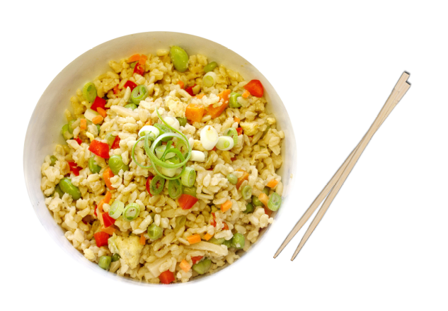

Pork Fried Rice Recipe

Cup of pork fried rice
Ingredients
- 1 tablespoon butter
- 1 (6 ounce) boneless pork loin chop, cut into small pieces
- 1 green onion, chopped
- ¼ cup chopped carrot
- ¼ cup chopped broccoli
- 1 egg, beaten
- 1 cup cold cooked rice
- ¼ cup frozen peas
- 1 ½ tablespoons soy sauce
- ⅛ teaspoon garlic powder
- ⅛ teaspoon ground ginger
How to make
- Melt the butter in a non-stick pan over medium heat.
Add pork, green onion, carrot, and broccoli; and increase the increase the heat of the pan. Cook and stir until pork is cooked through.
Transfer pork mixture into an empty bowl and return pan to medium heat.
- Stir egg into the pan and scramble until completely set.
Add pork & vegetable mixture from the bowl back into the pan. Then stir in rice, peas, soy sauce, garlic powder, and ground ginger.
Cook and stir until heated through.